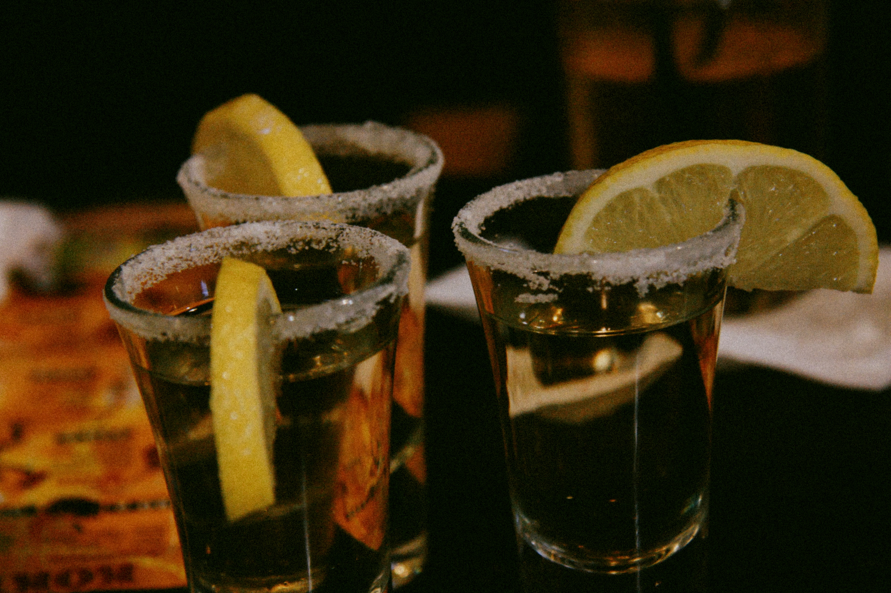
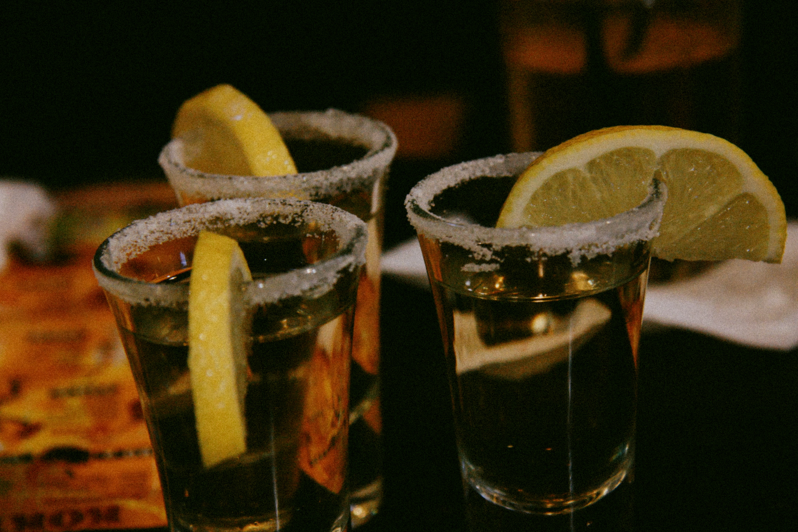

테킬라의 원산지는 멕시코이며, 아가베를 이용한 발효주인 풀케를 만들어 마시다 16세기 경 스페인으로부터 증류기술이 도입되어 풀케를 증류하여 메즈칼을 만들게 되었다. 메즈칼 중 테킬라 마을에서 생산되는 것만을 테킬라라고 부른다.
테킬라를 마실 때 라임과 소금을 함께 먹는 것은 열대지방인 멕시코에서 부족한 비타민과 염분을 섭취하기 위한 것이다.
테킬라의 제조법
테킬라는 8~10년 가량 자란 아가베를 발효시키 만든 풀케를 단식 증류기로 두 번 증류하여 만든다.
블랑코 : 숙성시키지 않은 것
레포사도 : 'rested'의 뜻으로 오크통에서 2개월 이상 숙성시킨 것
아네호 : 'aged'의 뜻으로 오크통에서 1년 이상 숙성시킨 것
 
